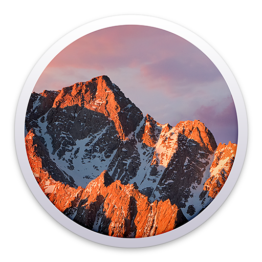
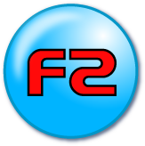

| This is an archive. | |
| See the new ClickWiki at https://clickwiki.github.io. This version is just an archive for the purposes of migrating content to the new structure. |
OS Compatibility
Clickteam Fusion 2.5 and its predecessors have been built and continuously expanded from its previous versions. Due to this, Clickteam products have a strong dependency on Windows and still maintains a lot of legacy code. The next generation of Fusion will be using cross-platform technologies to deliver a native product to all platforms.
This page will list problems and solutions for Windows users, as well as providing details on how to run Fusion on other desktop operating systems, such as  OS X and Linux.
Contents
Windows
Clickteam's products are built and designed for Windows and are fully supported on this platform. However there is a rare chance you may encounter a problem due to external factors.
Minimum Requirements
- Fusion 2.5 only runs and exports for Windows XP Service Pack 3 or newer.
-  Multimedia Fusion 2 can be run and exports for Windows 98 Second Edition and newer.
Potential Problems
| Symptoms | Cause | Solution |
|---|---|---|
| Random crashes when using Direct3D in the editor or running a program. | Improperly installed graphic drivers. | Re-install the graphic drivers on your system, or roll back to a previous version if a previous one worked. |
| Re-installing DirectX 9 from a redistribute may also help. | ||
| Antivirus is triggered during exportation or with specific extensions. | Antivirus is triggering a false positive. | Add the Fusion folder as an exception or to the blacklist for scanning. |
| Extensions, runtime or creations mysteriously disappear or cannot be found. | Exclude Fusion processes from being scanned. Eg. mmf2.exe and stdrt.exe. | |
| Report the affected file to the antivirus company as a false positive. | ||
| Cannot write to "protected" directories. (Such as creating an INI in the Windows directory) |
Windows prevents this for security reasons. | The program will need to be ran as an administrator or in compatibility mode. |
macOS
Mac users are now able to purchase the Mac Editor, which is an optimized version of Fusion 2.5 running in a Wine wrapper providing better integration with the Mac environment. The creations exported to OS X are native to the platform, and are not Wine wrappers.
The next generation of Fusion will be able to have a native editor for this platform.
The Mac version of the product will not be available via Steam (Mac). You can install Steam (Windows) through Wine with this guide.
GNU/Linux
There is currently no optimized editor or any plans to create an exporter to this platform with the current Fusion 2.5 product (Source).
Good news, Fusion 3 will greatly increase the possibility of support for this platform.
Running on non-Windows platforms
Using the Wine Compatibility Layer
Wine is an open source project that translates Windows API calls to a language the OS understands (such as DirectX → OpenGL). Once you set up a "wine prefix", you can then proceed to install your desired Clickteam product like you would on Windows. Performance is near native and is compatible with a vast amount of Fusion's features.
Further details about running under Wine are documented further on this page.
| OS X | ||
|---|---|---|
| PlayOnMac | Open Source | Provides a frontend for managing Wine. |
| Wineskin | Open Source | Creates wrappers. |
| WineBottler | Free | Creates wrappers. |
| CrossOver | Commercial | Provides an easy to use interface. Supports the Wine project. |
| GNU/Linux | ||
|---|---|---|
| Wine | Open Source | Packages available for your distribution. |
| PlayOnLinux | Open Source | Provides a frontend for managing Wine. |
| CrossOver | Commercial | Provides an easy to use interface. Supports the Wine project. |
Using Virtualization Software
If you would prefer to have the product running with as much compatibility as possible, while still using your main operating system, then you'll require: a copy of Windows, virtualization software and additional disk space. As virtualizing another computer adds overhead to your system resources, there may have degraded performance and/or unoptimized graphics (depending on the virtualization platform and hardware)
| OS X | |
|---|---|
| VirtualBox | Free / Open Source |
| Parallels | Commercial |
| VMWare Fusion | Commercial |
| GNU/Linux | |
|---|---|
| VirtualBox | Free / Open Source |
| QEMU | Open Source |
| KVM | Open Source |
| VMWare Workstation | Commercial |
| VMWare Player (64-bit only) | Commercial |
Dual Booting
On a Macintosh, this is available through Bootcamp. This requires a Windows license and splitting your disk's partitions. It also means you must restart your computer to switch operating systems.
For systems with existing operating systems:
Mac: Navigate to Launchpad → Utilities → Bootcamp Assistant and follow the on-screen instructions.
Linux: Use a disk partition utility such as GParted in a live session to split your partitions, then proceed to install Windows to the new unallocated space. Beware that Windows will overwrite the boot loader and will require a re-installation of GRUB to continue using the Linux operating system.
Always back up data before dual booting! As splitting partitions on an existing system can introduce data loss if the process fails or is interrupted.
Comparison
If one of Clickteam's products are the only ones forcing you to run a Windows environment, here's a table to help you decide:
Clickteam support the use of a Wine environment as the Mac Editor is based on a WineSkin package. Bugs are considered (and sometimes fixed) when submitted to the Bug Tracker.
Wine
A common misconception is that Wine is an emulator, which is not true. Wine is an acronym for Wine Is Not an Emulator, and simply translates Windows instructions to other operating systems, such as Linux, OS X and BSD. This makes it a superior solution than virtualizing a full Windows environment, especially for the sake of one application.
Known Wine Issues
There's a database entry on WineHQ's Application Database that rates the application's compatibility.
Here's a list of issues with the Wine environment.
| Problem | Symptoms | Solution | |
|---|---|---|---|
| OS X | GNU/Linux | ||
| Direct3D in the Frame Editor | This may appear as a black screen. | Some graphic cards/drivers will have no problems, for some computers there will be a rendering glitch or black screen. | To fix this, you must disable "Use Direct3D in the Frame Editor" from the Preferences dialog under the "Frame Editor" tab. |
| Direct3D programs may render the runtime incorrectly. | Interface objects (Buttons, edit boxes, etc) will not appear. (Windows runtime ONLY) | Some graphic cards/drivers will have no problems, but weaker computers may have problems rendering the frame correctly. | To prevent this, switch the Display Mode (Application Properties> Runtime Options> Display Options) to "Standard" or use the /DIB command switch. |
Extensions
Depending on the version of Wine, there may be problems with some extensions. Those that require a deep Windows dependency are likely to throw an error or crash.
- .NET Object
- DirectShow - This may work depending on the format and computer.
- Rich text boxes require the libraries riched20 and/or riched30 from winetricks to prevent a crash when these controls are displayed.
- Web Control Object - May require one of the Internet Explorer winetricks to be installed: ie6, ie7, ie8.
- Scintilla Instant editor crash
Installing Clickteam Products on Mac through Wine
Fusion
Installing the Standalone Version
This is a guide to install Fusion on Mac.
Required: Wineskin, Fusion Icons*, Fusion Installer (Demo, Free, Your Own. )
Step 1: Download Wineskin if you haven't already.
Step 2: Open Wineskin Winery and click Create New Blank Wrapper
Step 3: When your wrapper finishes creating, drag it from the Wineskin folder to your desktop.
Step 4: Right-click the wrapper and click "Open Package Contents", and double-click Wineskin.
Step 5: Click Install Software, then Choose Setup Executable
Step 6: Find and select the Fusion Installer.
Step 7: Go through setup with all normal settings. (but agree to the T&C)
Step 8: When it asks you to choose the executable, choose /mmf2u.exe.
Step 9*: If you haven't already, unzip the Fusion Icons zip file.
Step 10*: In the Wineskin window, click Advanced and then Browse under Icon.
Step 11*: Find the FusionIcons folder and choose the correct icon(Free, Standard, Dev)
Step 12: Close the window and move the wrapper to the Applications folder.
Step 13: Open Fusion like you normally would open a Mac app
Step 14: In Fusion, go to Tools>Preferences and go to the Frame Editor tab
Step 15: Uncheck "Use Direct3D in editor for Direct3D applications" and click OK.
*Optional, these steps are to add the Fusion logo to your wrapper.
Installing the Steam Version
This is a guide to install Steam on Mac and correctly install Fusion.
Step 1: Download PlayOnMac if you haven't already.
Step 2: Click "Install a Program" and choose Steam.
Step 3: Install Steam normally (in the C drive), but uncheck Launch Steam at the end.
Step 4: Once it closes, make sure Steam is selected and click Run.
Step 5: Log in to your account and try to download Fusion.
Step 6: If Steam closes while installing Fusion, try to re-open it and wait (it might take a while).
Step 7: Once Fusion is ready to launch, try to launch it and wait (it might take a while).
Step 8: Once it launches, go to Tools>Preferences and uncheck "Use Direct3D in editor for Direct3D applications".
Launching Fusion:
Step 1: Open PlayOnMac
Step 2: Select Steam and click Run
Step 3: Launch Fusion from Steam
Tools
This is a guide to install Install Creator or Patch Maker on Mac.
Required: Wineskin, Tools Icons*, Installer (Install Creator 2, Install Creator Pro, Patch Maker.)
Step 1: Download Wineskin if you haven't already.
Step 2: Open Wineskin Winery and click Create New Blank Wrapper
Step 3: When your wrapper finishes creating, drag it from the Wineskin folder to your desktop.
Step 4: Right-click the wrapper and click "Open Package Contents", and double-click Wineskin.
Step 5: Click Install Software, then Choose Setup Executable
Step 6: Find and select the correct Installer.
Step 7: Go through setup with all normal settings. (but agree to the T&C)
Step 8: When it asks you to choose the executable, choose /ic.exe or /PatchMaker.exe.
Step 9*: If you haven't already, double-click the Tools Icons dmg file.
Step 10*: In the Wineskin window, click Advanced and then Browse under Icon.
Step 11*: Click ToolsIcons under Devices and choose the correct icon (Install Creator, Patch Maker)
Step 12: Close the window and move the wrapper to the Applications folder.
Step 13: Open the tool like you normally would open a Mac app
*Optional, these steps are to add the tool's logo to your wrapper.
Fusion Exporters
Required: Exporter installer (XNA, Other)
This is a guide to install Exporters on Fusion on Mac.
Note: You must have installed a full (paid) version of Fusion in this way.
Step 1: Right-click on the Fusion wrapper and click "Open Package Contents".
Step 2: Open Wineskin.
Step 3: Click Install Software, then Choose Setup Executable
Step 4: Find and select the correct Installer.
Step 5: Go through setup with all normal settings. (but agree to the T&C).
Installing the XNA Exporter for the Steam version
This is a guide to install the XNA Exporter on the Steam version of Fusion on Mac.
Note: You must have installed the steam version of Fusion in this way.
Step 1: Open PlayOnMac
Step 2: Click Steam and click Configure
Step 3: Go to Miscellaneous and click "Run a .exe file in this virtual drive"
Step 4: Choose the XNA exporter installer
Step 5: Go through setup with all normal settings. (but agree to the T&C).
Integration outside of Wine environment
It is possible for Mac/Linux to call programs native to their system, but please take caution if you plan to distribute your product to another user's system. Programs can be called by running the System Object's Execute an external program → "With an evaluated pathname" action.
Here are some examples for a Linux environment:
Unix Pathname
| Command | Parameters | Action |
|---|---|---|
"/usr/bin/nautilus" |
Would open the Nautilus file manager. | |
"/bin/bash" |
"/path/to/script.sh" |
Executes a shell script in the background.[1] |
"/usr/bin/gnome-terminal" |
"-e /path/to/script.sh" |
Opens the Terminal and run a shell script.* |
"/usr/bin/zenity" |
"--info --title="Test Dialog" --text="Fusion opened me." " |
Open zenity (for creating dialogs) to create your own natively. (Make sure any parameters involving speech marks [""] are properly parsed by Fusion) |
[1] Note that user scripts and binaries will refuse to open for security reasons if they are not marked as executable.
Via Wine's Z: Drive
Similar thing again, but this will fail if the wine prefix has removed the Z: drive.
| Command | Parameters | Action |
|---|---|---|
"Z:\usr\bin\nautilus" |
Open Nautilus. | |
"Z:\bin\bash" |
"/path/to/script.sh" |
The Unix pathname needs to be correct in the parameter, since this is called via Linux and had left the Wine environment.* |
"Z:\usr\bin\gnome-terminal" |
"-e /path/to/script.sh" |
Opens the Terminal and run a shell script.* |
"Z:\usr\bin\zenity" |
"--info --title="Test Dialog" --text="Fusion opened me." " |
Open zenity (for creating dialogs) to create your own natively. (Make sure any parameters involving speech marks [""] are properly parsed by Fusion) |
Detecting if running in a Wine environment
Wine includes files in its Windows directory that could be checked if they exist, for example: C:\windows\system32\winecfg.exe